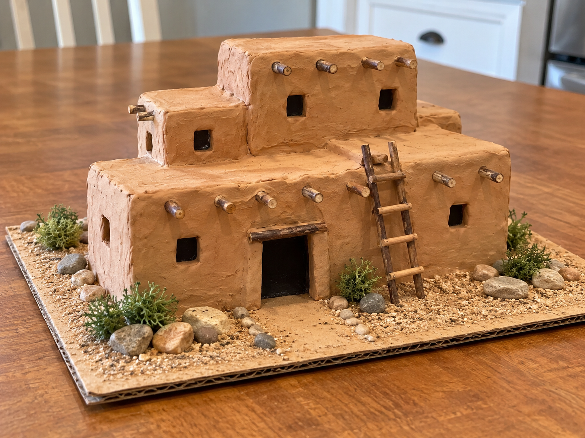
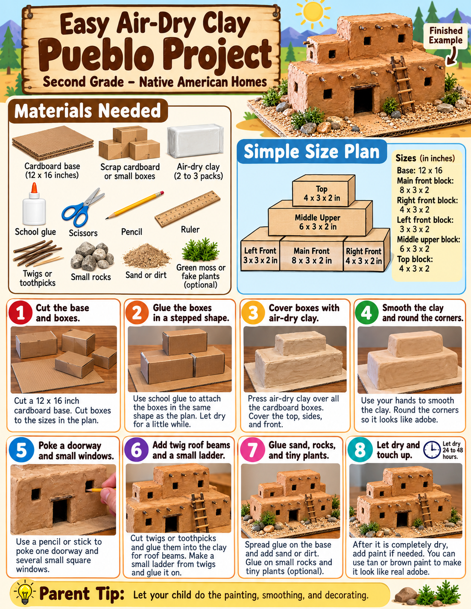
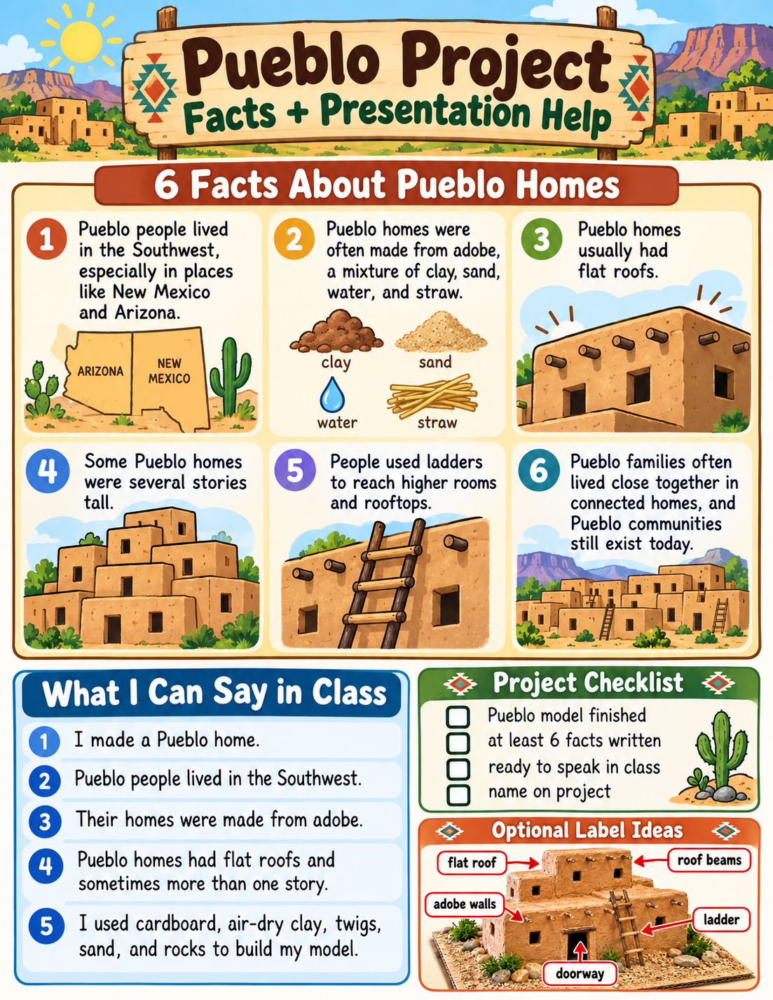

Pueblo peoples
Pueblo peoples have long lived in the American Southwest, including present-day New Mexico and Arizona. Pueblo communities continue today.
SECOND GRADE • HISTORY PROJECT
Rotate it • explode it • build it one piece at a time • learn why it works
BUILD MODE
INTERACTIVE MODEL
3D library could not load.
The building steps and diagrams still work. Connect the host PC to the internet once so the 3D library can load.
CLICK-THROUGH BUILD MODE
Cut a 12 × 16 inch rectangle from corrugated cardboard. Draw a faint center line to make positioning easier.
LEARN WHILE BUILDING
Pueblo peoples have long lived in the American Southwest, including present-day New Mexico and Arizona. Pueblo communities continue today.
Many Pueblo buildings were made with adobe—earth mixed with water and often plant material—formed into walls or bricks and dried.
Flat roofs create usable terraces and make it possible to place additional rooms above lower rooms.
Some Pueblo buildings contain connected rooms built in several levels. Our model uses simple blocks to demonstrate that idea.
Ladders help people move between roof levels. A small twig ladder makes this important feature easy to recognize.
Wooden roof beams can project from adobe walls. The short twigs on the model represent these structural beams.
QUICK CHECK
Choose an answer.
PRINT / BUILD REFERENCES


